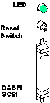

Operating Documentation
Direction 5224328-800, Rev# 5
Dir 5224328-800 LightSpeed 5.X HP60 Limited Access Service
Methods - Adv.
Operating Documentation |
diagnostic(s): (OC) hinv, scsistat, showdasm, clrsp, rqs, rsp
error log(s): (OC)
The DASM runs a power up self-test as well as an idle test loop (heartbeat) when on. See the manual that comes with all DASMs for more info on LED error status and heartbeat indications. When the DASM is failing, its middle two LEDs flash an error code, after all LEDs are momentarily flashed ON.
There is an application utility called showdasm that can be run from any shell to check basic communications with the DASM by retrieving its configuration. Note however that while there are active filming jobs, showdasm will fail with an “open failure” because the DASM device is opened exclusively by the filming print filter/manager.
A SCSIbus0 reset popup ALERT message is a clear indication of a physical DASM problem/failure. This SCSIbus0 channel is dedicated to the DASM. The components in this chain include:
DASM
SCSI cable (SGI carrier to DASM)
SCSI terminator module (on DASM)
LED/switch/SCSI PWA inside SGI carrier
SCSIbus0 ribbon cable inside SGI carrier
Ribbon-to-IP22 PWA inside SGI carrier
IP22 motherboard (contains SCSI controller/termination)
Illustration 1: DASM LED, Reset Switch and SCSI Connector

Sometimes after a filming and/or SCSIbus problem/error, the DASM device can be confused and/or out of synchronization with the host SCSI driver and/or platform DASM manager. Usually a second or third attempt at running showdasm will re-synchronize SCSI communications.
While the Analog DASM is in its idle test/loop or when an image has been sent to the DASM, the Video Output should have either a continuously changing pattern or the last image sent. This may be checked for the Analog DASM by connecting a short piece of coaxial cable from the DASM Analog Video Output connector to the Green Video input on one of the display monitors, after disconnecting the MG Video Input cables.
WHERE FILMING ERRORS ARE LOCATED
To investigate a filming problem, look at the following logs:
/usr/g/service/log/gessy*.log
/var/adm/SYSLOG*
/usr/g/ctuser/logfiles/prslog
Make sure the DASM power is applied (green power LED) and that the DASM power-up self-test completes successfully (flashing green CPU LED indicates idle heartbeat).
On analog VDB DASM only, the “RDY” and “XFR” LEDs should toggle back and forth when filming is running. This toggling indicates that film sheet images are being output by the DASM (“RDY”) and then captured by the camera video/analog input port (“XFR”).
Use hinv to check that the DASM was present at the last OC boot-up. The DASM looks like a disk drive to the Irix OS.
DASM LINE FROM hinv OUTPUT:
(other output)
Disk drive: unit 1 on SCSI controller 1
(other output)
Use scsistat to perform a “live” SCSIbus probe for the DASM device. Analog VDB and digital LCAM are shown separately, and the DASM firmware revisions should be as shown.
ANALOG VDB LINE FROM scsistat OUTPUT:
(other output)
Device 1 1 Disk CDA DASM-VDB FW Rev: 1.0e
(other output)
DIGITAL LCAM LINE FROM scsistat OUTPUT:
(other output)
Device 0 1 Disk ANALOGIC DASM-LCAM-3M FW Rev: 1.3
(other output)
Use showdasm to perform an extended inquiry from the DASM device. You must be 'root' with ctuser environment, as shown below, and the filming queue MUST be empty or fully paused or the showdasm will fail.
{ctuser@rhapby18}[1] showdasm
Could not initialize_scsi status = ffffffff
{ctuser@rhapby18}[2]su<ENTER>
Password:
{ctuser@rhapby18}[1]showdasm
Vendor: CDA Device: DASM-VDB
Pif software rev: 1.0e Krnl_rev: 2.1j
DRAM size: 1MB SRAM size: 32KB I/O blocks: 2048 block size: 512
SCSI ID: 1 CMDBLK addr: 200000 Baud: 1200 RS232 ctl reg: hex 8e
Eprom checksum: hex 0038f90f Internal checksum: hex 0038f770
RS232 Disabled DBUG Disabled Power-on RAM tests Disabled
{ctuser@rhapby18}[2]
Any SCSIbus or device related errors will be logged to the shell window you're using, the OC console shell window, and will also be saved in the OC /var/adm/SYSLOG* Irix system log. The DASM device is /dev/dasm1, which is linked to /dev/scsi/sc1d1l0 (Octane).
If the above functions work, the DASM power, SCSIbus connections, and the host side DASM operation are all working properly. If not, you may have a problem with 'reconfig' (camera option, DASM type, etc.), SCSI cabling, or the DASM (it's usually NOT the DASM). Make sure you 'su' from the 'ctuser' shell and that the filming queue is empty or fully paused or the scsistat will show EXCLUSIVELY OPEN for the DASM line, and the showdasm will fail to open the DASM device, due to incorrect device permissions and environment variables.
The LCAM Status file is used for ALARMS, ERRORS and other messages from the laser camera. Here are the error codes from lc_msg_data.h:
/*.........................str..................,num,sev*/ /* Status codes */ "" ,0,0, "1 Camera Is Ready" ,1,0, "2 Acquiring an image" ,2,0, "3 Opening the magazines" ,3,0, "4 Removing a film from supply magazine" ,4,0, "5 Moving film to exposure area" ,5,0, "6 Exposing film (no other operations can be performed)",6,0, "7 Closing the magazines" ,7,0, "8 Moving film to film processor" ,8,0, "9 Unassigned status code" ,9,0, /* Recoverable Alarm codes */ "10 Supply Magazine Empty" ,PRS_MEDIA_SUPPLY_EMPTY,ERR_FATAL, "11 Receive Magazine Full" ,PRS_MEDIA_RECEIVE_FULL,ERR_FATAL, "12 Supply Magazine Full" ,PRS_MEDIA_SUPPLY_MISSING,ERR_FATAL, "13 Receive Magazine Missing" ,PRS_MEDIA_RECEIVE_MISSING,ERR_FATAL, "14 Supply Drawer Open" ,PRS_MEDIA_SUPPLY_OPEN,ERR_FATAL, "15 Receive Drawer Open" ,PRS_MEDIA_RECEIVE_OPEN,ERR_FATAL, "16 Top Cover Open" ,PRS_TOP_COVER_OPEN,ERR_FATAL, "17 Film Processor Not Ready" ,PRS_FILM_PROCESSOR_NOT_READY,ERR_FATAL, "18 Docking Unit Not Ready" ,PRS_DOCKING_UNIT_NOT_READY,ERR_FATAL, "19 Unassigned alarm detected" ,PRS_UNDEFINED_ALARM_CODE_19,ERR_FATAL, "20 Film Transport Error..." ,PRS_FIRST_FEED_ERROR,ERR_FATAL, "92 Camera Interface On Line ?" ,PRS_CAMERA_MMU_NO_RESPONSE,ERR_FATAL, "99 MMU timer started (952)" ,99,0, /* Status codes */ "200 Camera Interface On Line ?" ,PRS_DASM_COMM_ERROR,ERR_FATAL, "201 Can't allocate camera after 15 mn Trying...",PRS_PRINTER_BUSY_TIMEOUT,0, "202 Your Film Was Queued Trying To Allocate Camera...",PRS_FILM_QUEUED,0, "203 Film Low..." ,PRS_MEDIA_SUPPLY_LOW,0, "204 Print Paused..." ,PRS_PRINT_PAUSED,0, "207 Camera Is busy at This Time Print Paused...Restart",PRS_PRINTER_BUSY,0, "208 Can't Process Print Request at This Time Print Paused...Restart" ,PRS_BAD_PARAM,ERR_FATAL, "209 Time_out Print ...Restart" ,PRS_PRINT_CYCLE_TIMEOUT,0, "210 Failed acquire " ,PRS_FAILED_ACQUIRE,ERR_FATAL, "212 Unsupported Format" ,212,0, "301 OK" ,PRS_STATUS_OK,0, "Unknown Error returned" ,LAST_LC_MSG,0